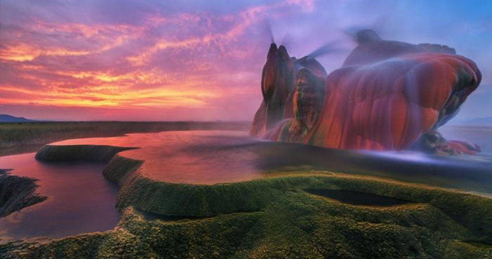
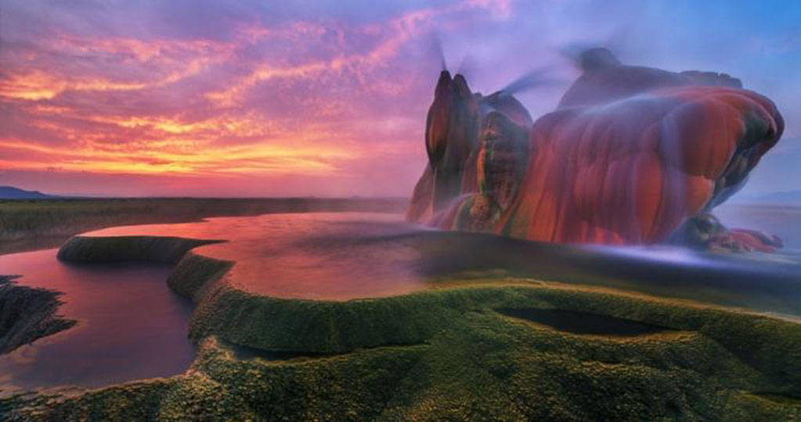

Fly Geyser
Jangan kaget, tempat di dunia ini banyak menyimpan beragam hal luar biasa yang bisa membuatmu tertegun ketika menyaksikannya.
Jangan kaget, tempat di dunia ini banyak menyimpan beragam hal luar biasa yang bisa membuatmu tertegun ketika menyaksikannya.
Fly Geyser, Amerika Serikat
Warna pink kemerahan di geyser tersebut dihasilkan dari oksidasi abu vulkanik
Fly Geyser tidak memungut biaya apapun dari pengunjungnya untuk masuk ke sana